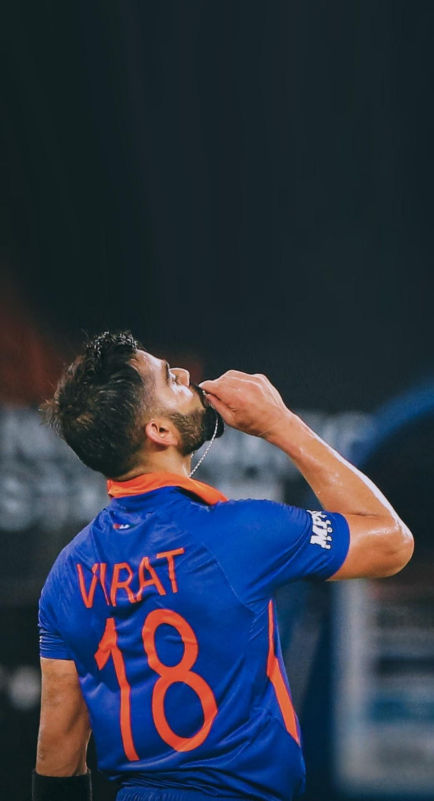
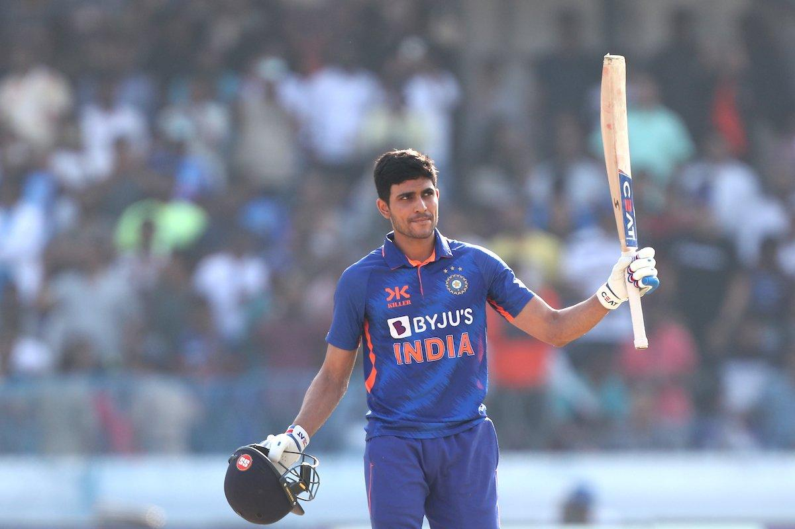

Overview: India recently played ODI match vs WI on 27 Sep,2026.In this match all the Indian fans became happy and feel satisfied because they saw what they came to see.
IND wins this match by 8 wickets while chasing a total of 295 runs in just 41.4 overs.
Virat Kohli plays a massive knock and goes not-out.

Scorecard
| Name | Runs | Balls | 4s/6s | S.R |
|---|---|---|---|---|
| Rohit Sharma | 32 | 35 | 2/3 | 91.43 |
| Shubman Gill | 110 | 108 | 13/1 | 101.85 |
| Virat Kohli | 139 | 88 | 10/9 | 157.95 |
| Ruturaj Gaikwad | 13 | 19 | 0/0 | 68.42 |
Records
Major Records broken by Virat Kohli

- 55th ODI Century:Virat Kohli scored his 55th century in ODI cricket, extending his record for the most ODI centuries by a batter.
- 15,000 ODI Runs:Kohli reached 15,000 runs in men's ODI cricket, becoming the second player to achieve this milestone after Sachin Tendulkar.
- Fastest to 15,000 ODI Runs:Kohli reached the milestone in his 303rd ODI innings, compared with Tendulkar's 377 innings.
- ODI centuries in successful chases:Kohli extended his record for centuries in successful ODI run chases.
Shubman Gill's Milestone

- 10th ODI century:India's captain Shubman Gill scored his 10th ODI hundred.
- 100 runs off 108 balls:Gill's innings included 13 fours and one six.